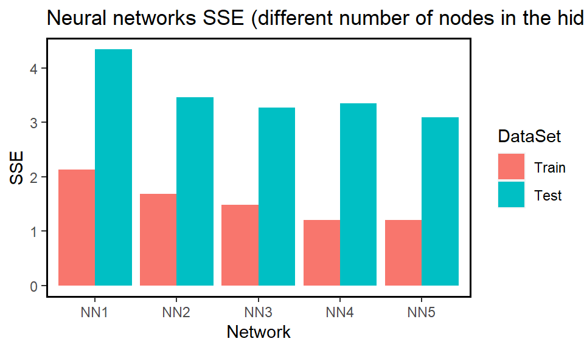

2 Exercise 1: Tasks in lecture notes
2.1 Task 2
QUESTION: On the Boston data, fit five neural networks such that
- the input layer has four nodes (
crime.rate,low.socio.status,aver.roomsandriver.bounds) - the output layer has one node (
median.value) - one hidden layer with the logistic function as its activation function and different number of hidden nodes, specifically from 1 up to 5.
For each neural network (i.e. the network with the specific number of hidden nodes), estimate the sum of squared errors (SSEs) for the training and test data sets. Visualise the SSEs with a graph and comment on its output.
The following codes were included in the lecture note to pre-process the data and split the data into training and test sets.
# load the data
library(MASS)
data(Boston)
Boston <- Boston[,c("medv","crim","lstat","rm","rad","chas")]
colnames(Boston) <- c("median.value","crime.rate","low.socio.status",
"aver.rooms","index.radial.highways","river.bounds")
# min-max normalisation
maxs <- apply(Boston, 2, max)
mins <- apply(Boston, 2, min)
scaled <- as.data.frame(scale(Boston, center = mins, scale = maxs - mins))
# train-test random splitting
set.seed(84)
index <- sample(1:nrow(Boston),round(0.75*nrow(Boston)))
train_Boston<- scaled[ index,]
test_Boston <- scaled[-index,]Hint:
- Write down the
Rcommand to fit a neural network on this dataset.
Suppose the hidden layer has only one hidden node. The corresponding R code is as follows.
Model <- neuralnet(median.value~crime.rate+low.socio.status+aver.rooms,
data=train_Boston, hidden=c(1), linear.output=TRUE)- Write down the
Rcommands to calculate SSEs for the training and test data sets.
Slightly different from the usual formula for sum of squared errors, we divide it by two so that the formula is consistent with the neuralnet package:
\[\frac{\sum(\text{observed}-\text{fitted values})^2}{2}\]
# training SSEs
train_SSE <- sum((Model$net.result[[1]]-train_Boston$median.value)^2)/2
test_pred <- neuralnet::compute(Model,test_Boston[,c("crime.rate",
"low.socio.status","aver.rooms")])
test_SSE <- sum((test_pred$net.result[[1]]-test_Boston$median.value)^2)/2- Combining the two hints to solve the question.
library(neuralnet)
set.seed(84)
# create an empty dataframe to save training and test SSE.
SSE <- data.frame(matrix(nrow=5, ncol=3))
colnames(SSE) <- c("no.hidden nodes","train SSE","test SSE")
# train the neural network and record training and test SSE
for (i in 1:5){
SSE[i,1] <- i #record the number of hidden nodes
nn_boston <- neuralnet(median.value~crime.rate+low.socio.status+aver.rooms+river.bounds,
data=train_Boston, hidden=c(i), linear.output=TRUE) #fit the model
SSE[i,2] <- sum((nn_boston$net.result[[1]] - train_Boston[,"median.value"])^2)/2 #record training SSE
test_pred <- neuralnet::compute(nn_boston, test_Boston[, c("crime.rate","low.socio.status","aver.rooms","river.bounds")])
SSE[i,3] <- sum((test_pred$net.result[[1]] - test_Boston[, "median.value"])^2)/2 #record test SSE
}
SSE## no.hidden nodes train SSE test SSE
## 1 1 2.128904 4.342257
## 2 2 1.686398 3.460076
## 3 3 1.488804 3.271197
## 4 4 1.208661 3.345709
## 5 5 1.201828 3.091838To visualise the SSEs, we create a bar plot using ggplot.
# Bar plot of results
library(ggplot2);library(tibble)
Regression_NN_Errors <- tibble(Network = rep(c("NN1", "NN2", "NN3", "NN4", "NN5"), each = 2),
DataSet = rep(c("Train", "Test"), time = 5),
SSE = c(t(SSE[,2:3])))
nn_ggplot <- Regression_NN_Errors %>%
ggplot(aes(Network, SSE, fill = DataSet)) +
geom_col(position = "dodge") +
ggtitle("Neural networks SSE (different number of nodes in the hidden layer)")
nn_ggplot We can notice that:
the training SSE is decreasing while the number of hidden nodes increases, and
the test SSE is not monotonically decreasing and the lowest test SSE is achieved when the network has five nodes in the hidden layer.
The first finding should not be surprising as adding more hidden nodes increases model capacity and hence the training error will decrease. However, a larger model may suffer from overfitting and hence the test error may not always decreasing. In general, we prefer the "least" complex neural network with the low(est) SSE on the test data set. Note that using different criteria could give us totally different results.
In addition, be cautious that the current result is produced based on a single training of neural network. Since the optimisation of neural network is sensitive to initialisation, running the algorithm again is likely to lead to different conclusions. To alleviate such randomness, consider adding the argument rep into neuralnet; e.g. including rep=10 will force the same network to be trained for ten times.